CONTENT-OUTLINE
汇总一些日常碰见的
CSS小问题– 盒子模型
box-size– CSS
BFC– 使用外部字体
@Font-Face– 禁用输入法
（chrome、opera、Safari尚未支持）– 高度塌陷问题
–
margin-top失效问题–
css overflow隐藏滚动条–
base64格式– CSS 文本换行总结
一、盒子模型
定义：box-sizing 允许您以特定的方式定义匹配某个区域的特定元素(W3C上的原话 )
语法：box-sizing:content-box|border-box
content-box:
宽度和高度分别应用到元素的内容框。
在宽度和高度之外绘制元素的内边距和边框。
border-box:
为元素设定的宽度和高度决定了元素的边框盒。
就是说，为元素指定的任何内边距和边框都将在已设定的宽度和高度内进行绘制。
通过从已设定的宽度和高度分别减去边框和内边距才能得到内容的宽度和高度。
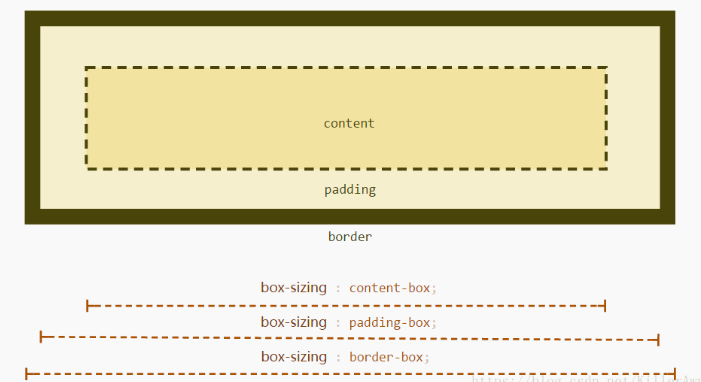
浏览器兼容性：
Internet Explorer、Opera 以及 Chrome 支持 box-sizing 属性。
Firefox 支持替代的 -moz-box-sizing 属性。
个人理解：
content-box:
padding值和border值不计算到内容（content）的宽度之内
即：一个盒子模型的总宽度=margin+padding+border+width;
border-box:
content的值包含了padding值和border值
即：一个盒子的总宽度=margin+width.
二、CSS BFC
block formatting context 块级格式化上下文BFC 是一个独立的渲染区域，只有block-level box参与，它规定了内部的block-level box如何布局，并且与这个区域外部毫不相干。BFC 就是页面上的一个隔离的独立容器，容器里面的子元素不会影响到外面的元素，反之也如此，包括浮动和外边距合并等等，有了这个特性我们布局的时候就不会出现意外情况了。
哪些元素会产生BFC
display属性为block、list-item、table的元素，会产生BFC 。（最常用的就是块级元素）
什么情况下会触发BFC
- 设置了float属性，并且不为none
- position属性为absolute或fixed
- display为
inline-block、table-cell、table-caption、flex、inline-flex - overflow 除了 visible 以外的值
（hidden，auto，scroll）
BFC元素所具有的特性
- 在bfc中，盒子从顶端开始垂直地一个接一个的排列；
- 盒子垂直方向的距离由margin决定，属于同一个BFC的盒子的margin会重叠；
- 在bfc中，每一个盒子的左边缘会触碰到父容器的左边缘内部，也就是说在没有margin和padding时，父border的内边和子border的外边重叠；
- bfc的区域不会与浮动盒子产生交集，而是紧贴浮动边缘；
- 如果父盒子没有设置高度，但子盒子中有浮动元素，那么在计算bfc的高度时， 会计算上浮动盒子的高度。
特性解读
第二条解读
在常规文档流中，两个兄弟盒子之间的垂直距离是由他们的外边距所决定的，但不是他们的两个外边距之和，而是以较大的为准。

1 | <div class="container"> |
1 | .container { |
这里我门可以看到，第一个子盒子有上边距（不会发生margin穿透的问题）；两个子盒子的垂直距离为20px而不是30px，因为垂直外边距会折叠，间距以较大的为准。
那么有没有方法让垂直外边距不折叠呢？答案是：有。特性的第5条就说了：bfc就是页面上的一个独立容器，容器里面的子元素不会影响外面元素，同样外面的元素不会影响到BFC内的元素。所以就让box1或box2再处于另一个BFC中就行了。
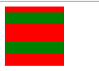
1 | <div class="container"> |
1 | .wrapper { |
BFC的主要用途
1. 清除元素内部浮动
只要把父元素设置为 BFC 就可以清除子元素的浮动，最常见的就是给父元素添加overflow：hidden属性。
其实我有一段时间不是很明白“清除子元素浮动”这句话，人家设置的好好的浮动，你干嘛给人家清除呢，那不就是不生效了么？其实清除浮动的意思不是清除你设置的元素的浮动属性，而是清除设置了浮动属性之后给别的元素带来的影响。举个栗子：
1 | <div class="father"> |
1 | .father { |
正常情况下的样子是上下块撑开父元素的高度
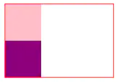
当给两个子元素设置了float属性之后，子元素不再占据父元素的空间，此时父元素的高度就为0
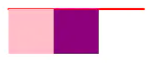
当设置父元素 BFC 后，此时就清除了子元素浮动带来的影响，什么影响呢，就是不撑开父元素的高度的影响，那么父元素的高度就是子元素的高度
为父元素添加
overflow: hidden;
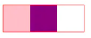
2. 解决外边距合并问题
我们知道，两个盒子在一起时，当有相邻的外边距时，会取外边距较大的那一个，也就是外边距会合并，但这种情况只发生在同属一个bfc的两个盒子中间，换言之，要想解决外边距合并问题，只要把两个盒子放在不同的BFC中即可。
3. 制作右侧盒子自适应宽度的问题
左侧盒子宽度固定，右侧宽度不固定：当在父元素中只设定一个盒子浮动，另一个不浮动时，会造成第二个盒子在第一个盒子的下方，被覆盖掉一部分（但文字不会被覆盖）。
1 | .father2 { |
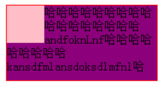
给第2个元素设定 BFC
1 | .s2 { |
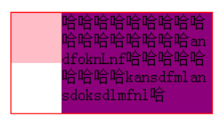
当增加第一个块的宽度时，第二个块的宽度会自动缩小，实现宽度自适应。
三、使用外部字体
先说自己遇到的问题：有个vue项目需要用给定的字体包，一直不能正确显示
刚开始的时候，字体包 是放在public下，并在src中的 css文件中使用绝对路径引用，像这样
1 | @font-face{ |
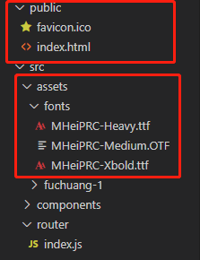
但一直报错
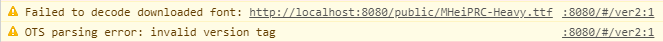
后来的解决办法是 把fonts文件移到asset中，然后在引用时候使用相对路径
1 | @font-face{ |
另外，在@font-face中使用font-weight不生效（未解决）
下面是关于@font-face的内容 MDN文档
语法
参考自 font-face 详解
1 | @font-face { |
1 | @font-face { |
webFontName: 引入的自定义字体名称，将会为指定的元素添加font-family: webFontNamesource: 字体路径format: 字体格式，用于帮助浏览器识别1
truetype opentype truetype-aat embedded-opentype svg …
weight: 字体是否粗体style: 字体样式
格式
truetype - ttf- Windows 和 Mac 最常见字体
- RAW 格式，不为任何网站优化
- IE9+、Firefox3.5+、Chrome4+、Safari3+、Opera10+、iOS Mobile Safari4.2+
opentype - otf- 原始字体格式，内置在 truetype 基础之上
- 提供更多功能
- Firefox3.5+、Chrome4.0+、Safari3.1+、Opera10.0+、iOS Mobile Safari4.2+
web-open-font-format - woff- Web 字体最佳格式
- 是一个开放的 truetype、opentype 压缩版本
- 支持元数据包的分离
- IE9+、Firefox3.5+、Chrome6+、Safari3.6+、Opera11.1+
embedded-opentype - eot- IE 专用字体
- 可以从 truetype 创建此格式
- IE4+
svg - svg- 基于 svg 渲染
- Chrome4+、Safari3.1+、Opera10.0+、iOS Mobile Safari3.2+
使用
- 获取自定义字体的原始文件，可前往 DaFont 下载
- 在 Font Squirrel 将字体转换为兼容各浏览器的 Web 字体
- 按上述兼容性语法指定 @font-face 中的字体
- 在指定元素中调用该自定义字体
使用注意
1. 字体文件名简写
1 | @font-face { |
提示：
src属性定义字体的下载地址，local表示本机地址，url表示网址（比如使用服务器上下载的字体）- 如果在
src上定义了多种字体，他们也是候选关系，如上段代码 - 如果修改了src中定义的字体或者顺序，一定要关闭浏览器再打开才能看到修改后的效果，刷新是看不到的
- 在
@font-face规则中,font-family的作用是声明字体变量，与普通选择器中的font-family是不一样的。
2. 使用服务端字体
在@font-face规则中，如果src属性定义的字体是一个url路径，则网页加载时会自动从服务器下载字体文件，再显示出来。
1 | @font-face { |
3. @font-face浏览器兼容
由于每种浏览器对@font-face的兼容性不同，不同的浏览器对字体的支持格式不同，这就意味着在@font-face中我们至少需要.woff,.eot两种格式字体，甚至还需要.svg等字体达到更多种浏览版本的支持。
.TTF或.OTF，适用于Firefox 3.5、Safari、Opera；.EOT适用于Internet Explorer 4.0+；.SVG适用于Chrome、IPhone， 获取要使用字体的三种文件格式，确保能在主流浏览器中都能正常显示该字体。
使用CSS3的@font-face属性可以实现在网页中嵌入任意字体，但是IE只支持微软自有的EOT格式字体，而其他浏览器都不支持这一字体格式，其它浏览器可以设置TTF(TrueType)和OTF(OpenType)两种字体作为自定义字体
下面要解决的是如何获取到某种字体的这三种格式文件。一般地，我们在手头上（或在设计资源站点已经找到）有该字体的某种格式文件，最常见的是.TTF 文件，我们需要通过这种文件格式转换为其余两种文件格式。字体文件格式的转换可以通过网站FontsQuirrel或 onlinefontconverter提供的在线字体转换服务获取。获取到三种格式的字体文件后，
下一步要在样式表中声明该字体，并在需要的地方使用该字体。
1 | @font-face { |
四、禁用输入法
1. CSS3 ime-mode
IE浏览器从IE5开始就支持该属性，FireFox浏览器从FireFox3.0开始也支持该ime-mode属性。不过chrome、opera、Safari浏览器还没有开始支持该属性。
| 名称: | ime-mode |
|---|---|
| 值: | auto | normal | active | inactive | disabled | inherit |
| 初始值: | auto |
| 应用元素: | text fields（文本字段） |
| 继承性: | no |
- auto : 默认值，不影响当前输入法编辑器的状态
- normal : 输入法编辑器的状态应该是normal，这个值可以用于用户样式表来覆盖页面的设置。IE浏览器不支持该属性
- active : 输入法编辑器的状态初始时是激活的；输入将一直使用该输入法直到用户切换输入法。该属性在Linux操作系统下不支持
- inactive : 输入法编辑器的状态初始时是非激活状态；除非用户激活输入法
- disabled : 禁用输入法编辑器；该输入法编辑器也许不会被用户激活
2. 替代方法
由于第一种方法不被广泛支持，因此另一种方法就是 使用readonly禁止掉文本框弹出输入法
1 | <input class="selectCarBtn" readonly="readonly" type="text" placeholder="输入车牌号"> |
五、高度塌陷
1 |
|
页面效果如下：
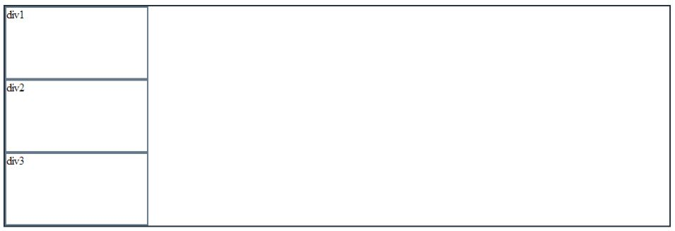
在div-outer内部的三个div默认每个div会占一行，所以三个div会成列显示。
现在对div1设置float: left，页面如图所示
1 | /*操作一*/ |
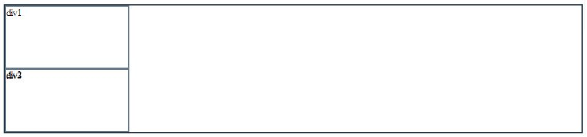
可以看到div2和div3重合了
对div1设置float: left属性，div1脱离文档流，但是仍占据位置，div2和div3重合是因为div2位置不变，div3也在div2的位置。但是发现这样理解是不对的，正确的理解是div2被div1挤到了现在div3的位置。
因为如果对div1设置float: right，页面如图所示
1 | /*操作二*/ |
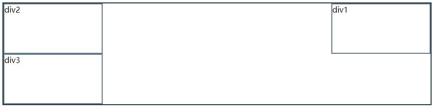
所以如果对div1设置float: left时，div2会被div1挤到现在div3的位置。
对css高度塌陷问题的理解
如果对div1，div2，div3都设置float: left，但是父元素div-outer没有设置宽度和高度，页面如图所示
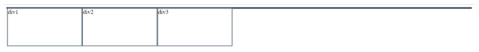
如果没有设置父元素高度，父元素的高度默认是auto，会随子元素的高度而改变，如果对div1，div2，div3都设置float: left，那么此时父元素高度为0，这就是浮动塌陷。
解决办法一：添加一个新的div
设置该div为 clear：both; 的空div
解决办法二：设置父元素属性
对父元素设置属性overflow: hidden或overflow: auto，
设置overflow: hidden的意思是，overflow规定当内容溢出元素框时发生的事情
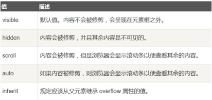
因为父元素没有指定高度，默认是auto，所以需要计算父元素包含的内容的高度，这样子元素浮动的高度就被计算进去，解决了浮动塌陷。
解决办法三：设置父元素display:table
解决办法四：内墙法
六、margin-top失效问题
现象：
当两个空的块级元素嵌套时，如果内部的块设置有margin-top属性，而且父元素没有下边解决方法所述的特征，那么内部块的margin-top属性会绑架父元素（即将margin-top传递凌驾给了父元素）。
就好比一个小兵，看到上级有漏洞，就假传圣旨，利用漏洞扩张自己的权利。只要设置父元素的border（栅栏）或者padding（隔离墙），就能管住这个调皮的下属。
1 | <div id="parrent"> |
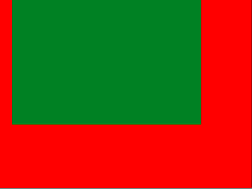
这个现象并不是bug，而是有理论依据的：
《on having layout》
hasLayout 会影响一个盒子和其子孙的边距重叠。根据规范，一个盒子如果没有上补白和上边框，那么它的上边距应该和其文档流中的第一个孩子元素的上边距重叠。
但值得一提的是，只有在Fire Fox和Chrome下才会出现这种margin-top绑架父节点的情况，在IE6 IE7中均显示正常，但这恰恰说明了他们是不符合规范的，而FF合Chrome则是严格遵守规范的。
解决方法：
- 设置父元素或者自身的display:inline-block;
- 设置父元素的border:1px aqua solid;(>0)
- 设置父元素的padding:1px;(>0)
- 给父元素设置overflow:hidden;
- 给父元素或者自身设置position:absolute;
- 设置父元素非空，填充一定的内容。
七、css overflow 隐藏滚动条
1 | #fuchuang-3{ |
八、base64格式
图片转
base64格式工具 FeHelper
1、Base64编码表
| 码值 | 字符 | 码值 | 字符 | 码值 | 字符 | 码值 | 字符 |
|---|---|---|---|---|---|---|---|
| 0 | A | 16 | Q | 32 | g | 48 | w |
| 1 | B | 17 | R | 33 | h | 49 | x |
| 2 | C | 18 | S | 34 | i | 50 | y |
| 3 | D | 19 | T | 35 | j | 51 | z |
| 4 | E | 20 | U | 36 | k | 52 | 0 |
| 5 | F | 21 | V | 37 | l | 53 | 1 |
| 6 | G | 22 | W | 38 | m | 54 | 2 |
| 7 | H | 23 | X | 39 | n | 55 | 3 |
| 8 | I | 24 | Y | 40 | o | 56 | 4 |
| 9 | J | 25 | Z | 41 | p | 57 | 5 |
| 10 | K | 26 | a | 42 | q | 58 | 6 |
| 11 | L | 27 | b | 43 | r | 59 | 7 |
| 12 | M | 28 | c | 44 | s | 60 | 8 |
| 13 | N | 29 | d | 45 | t | 61 | 9 |
| 14 | O | 30 | e | 46 | u | 62 | + |
| 15 | P | 31 | f | 47 | v | 63 | / |
编码说明
Base64编码要求把3个8位字节（3*8=24）转化为4个6位的字节（4*6=24），之后在6位的前面补两个0，形成8位一个字节的形式。 如果剩下的字符不足3个字节，则用0填充，输出字符使用’=’，因此编码后输出的文本末尾可能会出现1或2个’=’。
为了保证所输出的编码位可读字符，Base64制定了一个编码表，以便进行统一转换。编码表的大小为2^6=64，这也是Base64名称的由来。
2、base64做图片src属性的地址
使用base64格式图片，这种方法可以在页面文件中嵌入图片，嵌入方法同引入外部图片
1 | <img src="data:image/png;base64,iVBORw0KGgoAAAANSUhEUgAAAHgAAAB4CAMAAAAOus |
src或 url() 中有一大串编码。它把一些 8-bit 数据翻译成标准 ASCII 字符，网上有很多免费的base64 编码和解码的工具， 后面跟的一串代码就相当于链接地址。
3、Data URL scheme 支持的类型有哪些？
1 | data:,文本数据 |
4、将图片转化为base64格式的方法？
a、利用canvas 将图片转化为base64 编码格式
1 | dataURL = canvas.toDataURL("image/jpeg"); |
b、利用 html5 的 FileReader 将图片转化base64格式 FileReader 是H5提供的一个处理文件的API，
1 | var reader=new FileReader(); |
九、CSS 文本换行总结
1、文本超出隐藏
实现这个效果需要用到css的 text-overflow 属性，其表示文本溢出时发生的事情。
它有三个属性值，分别是clip(修剪文本)、ellipsis(省略号代替)、string(指定字符串代替)。
1 | <div class="context">sdsdsdsadsadsadas</div> |
接下来重点说一说多行文本溢出显示省略号，实现方法如下：
1 | display: -webkit-box; |
效果如图：
1 | aaaaaaaaaaaaaa |
适用范围：
因使用了WebKit的CSS扩展属性，该方法适用于WebKit浏览器及移动端；
注意：
-webkit-line-clamp用来限制在一个块元素显示的文本的行数。 为了实现该效果，它需要组合其他的WebKit属性。常见结合属性：display: -webkit-box;必须结合的属性 ，将对象作为弹性伸缩盒子模型显示 。-webkit-box-orient必须结合的属性 ，设置或检索伸缩盒对象的子元素的排列方式 。
2、文本换行（简要概括）
①文字不换行（ white-space ）
1 | white-space: nowrap; |
- normal：连续的空白符会被合并，换行符会被当作空白符处理。填充line盒子时，必要的话会换行。
- nowrap：和normal一样，连续的空白符会被合并。但文本内的换行无效。
- pre：连续的空白符会被保留。在遇到换行符或者
<br>元素时才会换行。 - pre-wrap：连续的空白符会被保留。在遇到换行符或者
<br>元素，或者需要为了填充line盒子时才会换行。 - pre-line：连续的空白符会被合并。在遇到换行符或者
<br>元素，或者需要为了填充line盒子时会换行。
| 值 | 描述 |
|---|---|
| normal | 默认。空白会被浏览器忽略。 |
| pre | 空白会被浏览器保留。其行为方式类似 HTML 中的 <pre> 标签。 |
| nowrap | 文本不会换行，文本会在在同一行上继续，直到遇到 <br> 标签为止。 |
| pre-wrap | 保留空白符序列，但是正常地进行换行。 |
| pre-line | 合并空白符序列，但是保留换行符。 |
| inherit | 规定应该从父元素继承 white-space 属性的值。 |
②允许长单词换行 （ word-wrap || overflow-wrap ）
1 | word-wrap: break-word; |
| 值 | 描述 |
|---|---|
| normal | 只在允许的断字点换行（浏览器保持默认处理）。 |
| break-word | 在长单词或 URL 地址内部进行换行。 |
③换行不截断单词（ word-break ）
先介绍一个缩写CJK：中日韩统一表意文字
1 | word-break: break-all; |
| 值 | 描述 |
|---|---|
| normal | 使用浏览器默认的换行规则。 |
| break-all | 允许在单词内换行 ||对于非CJK文本，可在任意字符间断行 |
| keep-all | 只能在半角空格或连字符处换行。|| CJK文本不断行，非CJK文本表现同normal一样 |
④换行时使用连字符连接单词（ hyphens — 实验中）
此属性告诉浏览器在换行时使用连字符连接单词
属性值：none | manual | auto
⑤单行文字超出显示省略号
1 | overflow: hidden; |
⑥多行文字超出显示省略号
1 | overflow: hidden; |